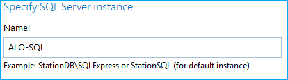
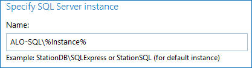

Symptom
The following error is prompted in Health Log for your SQL Server monitoring plan in Netwrix Auditor:
Netwrix Auditor State-in-Time error:
Monitoring plan: %SQL_monitoring_plan_name%.
Item: %SQL_server%
The following error occurred during state-in-time operation snapshot collection:
A network-related or instance-specific error occurred while establishing a connection to SQL Server.
The server was not found or was not accessible.
Verify that the instance name is correct and that SQL Server is configured to allow remote connections.
(provider: SQL Network Interfaces, error: 25 - Connection string is not valid)Cause
The SQL Server instance name was specified incorrectly in the affected monitoring plan item.
Resolution
Review the affected item in your SQL Server monitoring plan:
-
In the main Netwrix Auditor menu, click Monitoring Plans.
-
Select the affected SQL Server monitoring plan and click Edit. Refer to the error message to establish the affected monitoring plan name.
-
Select the affected instance and click Edit item. Refer to the error message to establish the affected item name.
-
Review the instance name specified:
-
For a default SQL instance name (MSSQLSERVER), only specify the server FQDN or NetBIOS name. See the example for a reference.
 -
For a named SQL instance, specify FQDN\Instance_name.

-
-
Once the changes are introduced, click Save & Close.